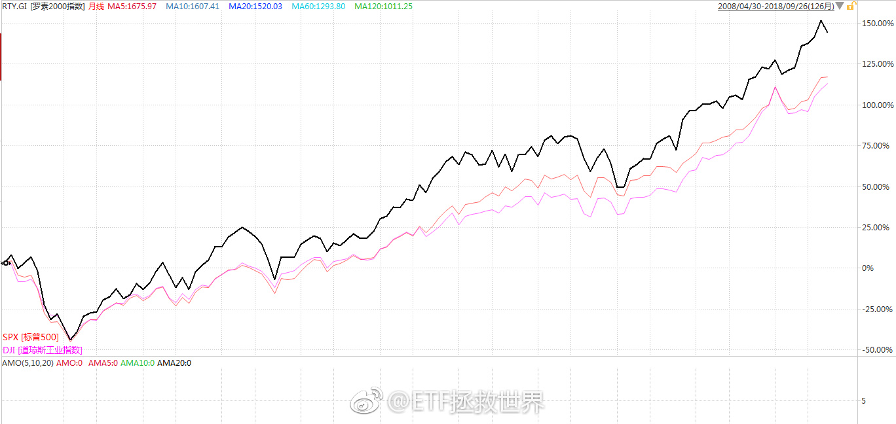

我建议各位，无论看到谁说什么东西，都先去求证一下到底是不是，不要别人家说个结论你就随便信以为真。很多人大概都没弄懂什么叫港股化就天天跟着别人喊A股要港股化。别人说美股小盘股不行你也跟着说。打开软件看看，长期，分阶段，多看几个大小盘指数，都看看再说。要独立思考啊，朋友们。
回复@Benphen:十年 二十年 三十年 两者的对比结果都不同。我要说明的是美股小盘股不像很多人说的不行。大盘股或小盘股都会有阶段性表现更佳的情况。这就是为什么经典资产配置中美股要同时配置大小盘股。@ETF拯救世界:但是，有人所谓的“未来就是跟美股一样，是大盘股的天下，小盘股全完了”这种论调不仅无知，简直就是扯淡。过去十年罗素2000小盘股指数和标普500和道琼斯工业的对比。小盘股，永远不要看不起小盘股。无论是香港，美国，还是A股。记住这个。垃圾股和小盘股可不是一个概念。 
等你。@财联社APP:【富时罗素CEO：中国股票未来有望在富时新兴市场指数占过半权重】财联社9月27日讯，富时罗素首席执行官麦思平表示，富时罗素的最终目标是全面纳入中国A股，未来中国股票（包括A股以及非A股中国股票）有望在富时新兴市场指数中占到50%以上的权重，在富时环球指数中占到6.5%的权重。
但是，有人所谓的“未来就是跟美股一样，是大盘股的天下，小盘股全完了”这种论调不仅无知，简直就是扯淡。过去十年罗素2000小盘股指数和标普500和道琼斯工业的对比。小盘股，永远不要看不起小盘股。无论是香港，美国，还是A股。记住这个。垃圾股和小盘股可不是一个概念。
咱这么算吧。沪深300是300只。+中证500是800只。再加中证1000，一共1800只。光300只涨，肯定不是牛市。真牛市至少得这800只甚至1800只一直涨吧。但是，注意，现在可是有3551只A股。所以，你要说有1/3甚至一半股票变成一潭死水，甚至很多变成仙股，是真有可能的。炒股的，只能寄希望于自己拿的不是这些股票了。。所有股票一起涨的市场可能不容易见到了。
回复@勤奋happyfire:不对。每一个人的风险承受能力和预期收益率以及各种情况都不同。不要看别人，问问自己。跌50%和涨50%现在舒服不舒服。舒服就不要改变。@ETF拯救世界:明天又到了关键日。几个指数目前很微妙，可上可下。也没几个钱了，还剩25%，无所谓了。慢慢耗着吧。
股票这玩意吧，你看别人买什么也去买，其实风险很大。就像你看人家去走钢丝高空飞人你也去一样危险。我观察的一个高手，收益率很高。但是他强力推的几个股票，你买了拿到现在巨亏的很多。不是说人家不靠谱，而是说你没有人家的技术。今天一只又暴跌50%。但是人家赚了很多。所以跟股票真的谨慎点最好。不把买点卖点买卖时间都跟上，那就不如不跟了。